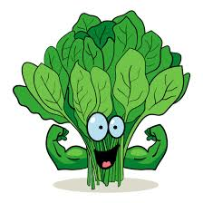
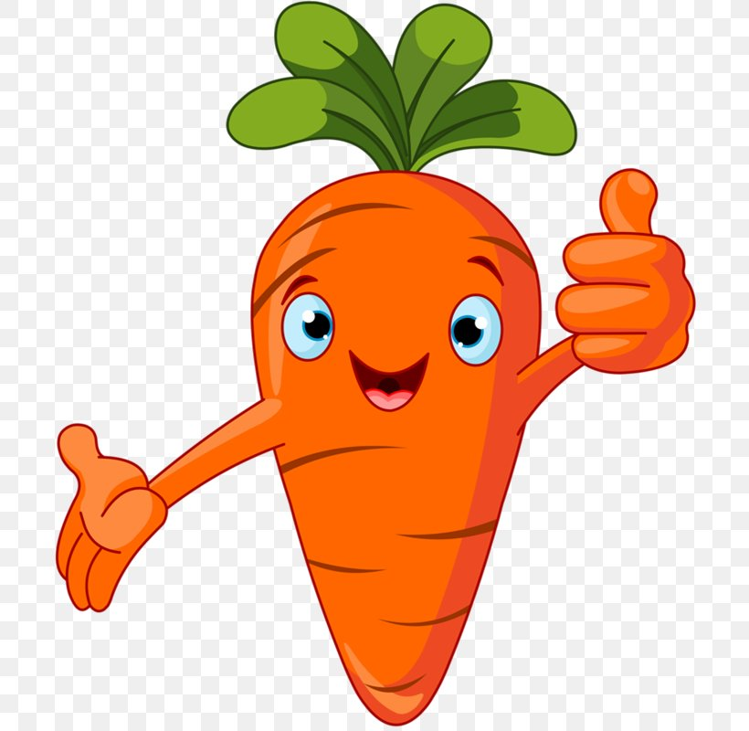
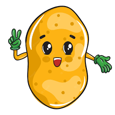
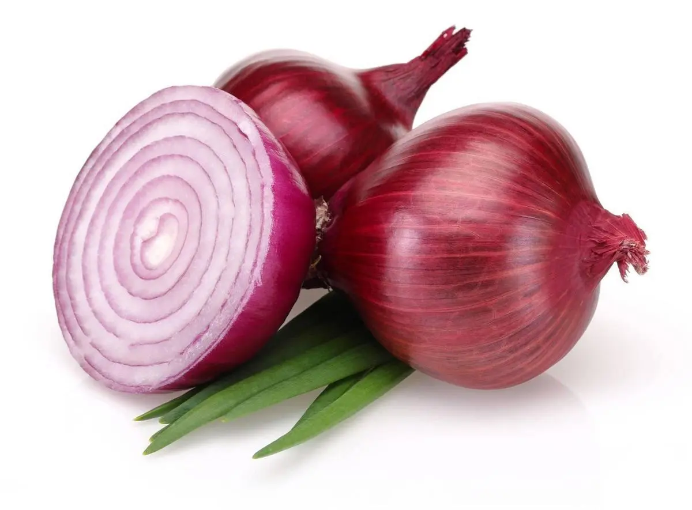
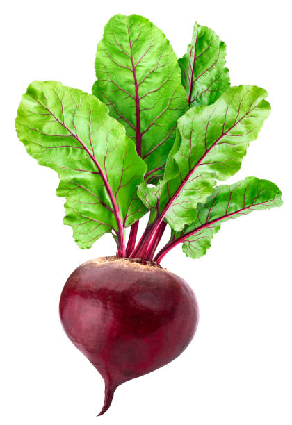
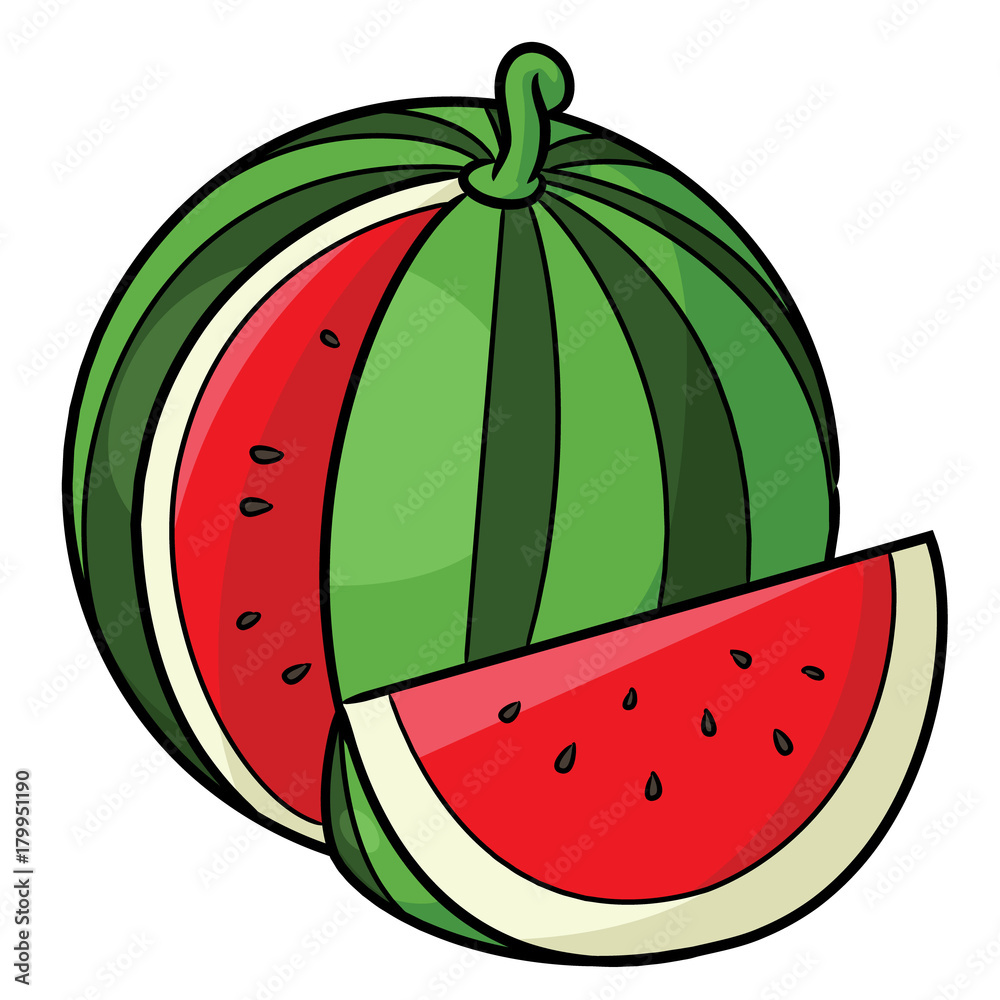
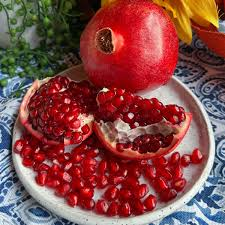

HealthyFood
- Spinach 
- Carrots 
- Potatoes 
- Onions 
- Beets 
vegitables
Popeye's favorite veggie is a great source of not only protein, but also vitamins A and C, antioxidants and heart-healthy folate. One cup of the green superfood has nearly as much protein as a hard-boiled egg—for half the calories. Looking to get the biggest nutritional bang for your buck? Be sure to steam your spinach instead of eating it raw. This cooking method helps retain vitamins and makes it easier for the body to absorb the green's calcium content. Add a handful to soups, protein shakes, omelets, pasta dishes, and veggie stir-fries, or simply steam it and top with pepper, garlic, olive oil and a squeeze of lemon.
Carrots are an excellent source of vitamin A, vitamin C, vitamin K, potassium, and fiber, and that's just the tip of the nutritional iceberg. Beta-carotene—the compound that gives carrots their orange hue—has been linked to a decreased risk for developing certain types of cancer. Per an American Journal of Clinical Nutrition study of over 3,000 women, those who had higher levels of beta-carotene in their blood had a 59 percent lower risk of a certain type of breast cancer (ER-negative breast cancer) than women with lower levels. Another related compound also found in carrots, alpha-carotene, reduced the cancer risk by about 39 percent. Another study published in the journal Nutrition and Cancer suggested beta-carotene may ward off lung cancer. According to scientists, beta-carotene and alpha-carotene are carotenoids that our bodies convert to vitamin A, which is important for immune function, maintaining healthy cells, and activating carcinogen-metabolizing enzymes.
If you typically eat your potatoes warm out of the oven, you're missing out on the spud's fat-fighting superpowers. When you throw potatoes in the refrigerator and eat them cold, their digestible starches turn into resistant starches through a process called retrogradation. As the name implies, resistant starch, well, resists digestion, which promotes fat oxidation and reduces abdominal fat. Since eating cold baked potatoes doesn't sound too appetizing, why not use the cooled spuds to make a potato salad instead? Here's how: Bake red potatoes in the oven until they're cooked through and allow them to fully cool. Then, cut them into small slices and dress them with Dijon mustard, fresh pepper, chopped green onions (more on this veggie next), dill and plain Greek yogurt. Mix everything together and put in the refrigerator to cool before consuming.
Onions are rich in quercetin, a flavonoid that increases blood flow and activates a protein in the body that helps regulate glucose levels, torches stored fat and keeps new fat cells from forming. Not to mention, onions are basically the unsung hero of cardiovascular health—an important area of wellness for everyone, but especially those who hit the gym hard to accelerate their weight-loss efforts. The culinary staple can help lower cholesterol, ward off hardening of the arteries and help maintain healthy blood pressure levels.
These ruby-red roots contain a type of antioxidant called betalains that help repair and regenerate cells in the liver, your body's primary detox organ. Beets are also high in immune-boosting vitamin C, fiber, and essential minerals like potassium, which allows for healthy nerve and muscle function, and manganese, which is good for your bones, liver, kidneys, and pancreas. What's more? Beets also contain nitrates which, according to a study in The Journal of Nutrition, lowers blood pressure and helps those with chronic kidney disease.
Fruits
- Apples
- Watermelon 
- Pomegranates 

Apples are a great fruit source of fiber, which studies have proven to be integral to
reducing visceral fat. A recent study at Wake Forest Baptist Medical Center found that
for every 10-gram increase in soluble fiber eaten per day, visceral fat was reduced by 3.7
percent over five years. A study conducted by University of Western Australia researchers
found that the Pink Lady variety had the highest level of antioxidant flavonoids.
Watermelon sometimes gets a bad rap for being high in sugar, but the fruit has some impressive health benefits. Eating watermelon may improve lipid profiles and lower fat accumulation, according to University of Kentucky researchers. Better yet, a study of athletes by the Universidad Politécnica de Cartagena in Spain found watermelon juice to help reduce the level of muscle soreness. And staying hydrated with foods like watermelon is just one of the ways to eat your water.
Not only are pomegranates packed with protein and belly-filling fiber (which is found in the fruit's edible seeds) but they also contain anthocyanins, tannins, and high levels of antioxidants, which research published in the International Journal of Obesity says can help fight weight gain. Toss some pomegranate seeds onto a salad for a burst of flavor,or mix them into a smoothie to boost the beverage's nutrient content.
Next